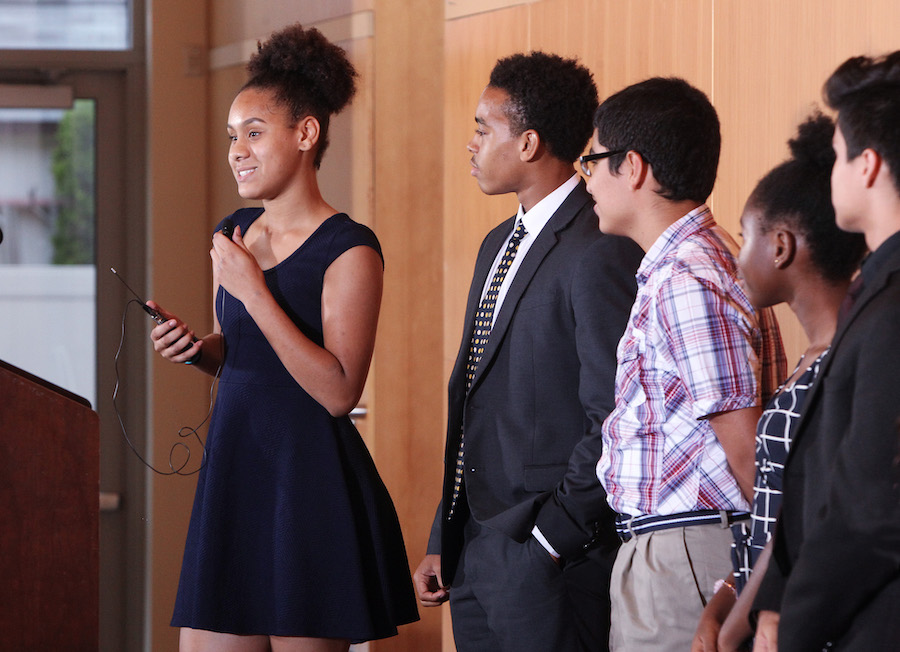
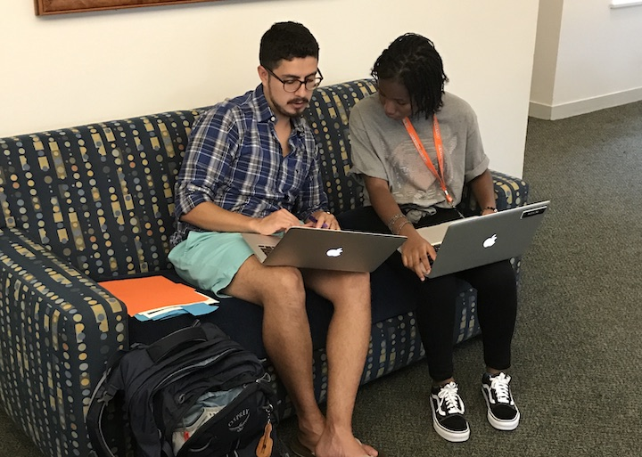
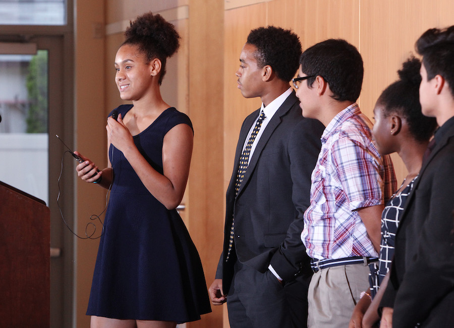
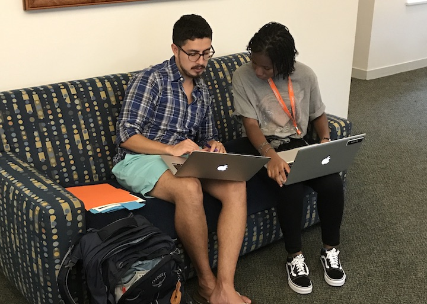
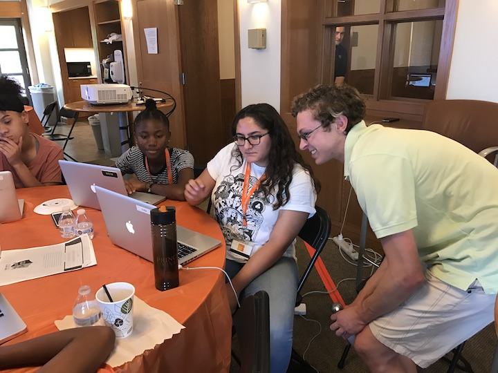
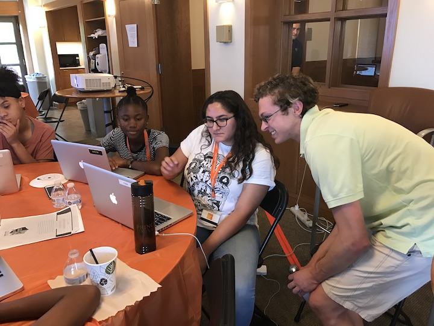
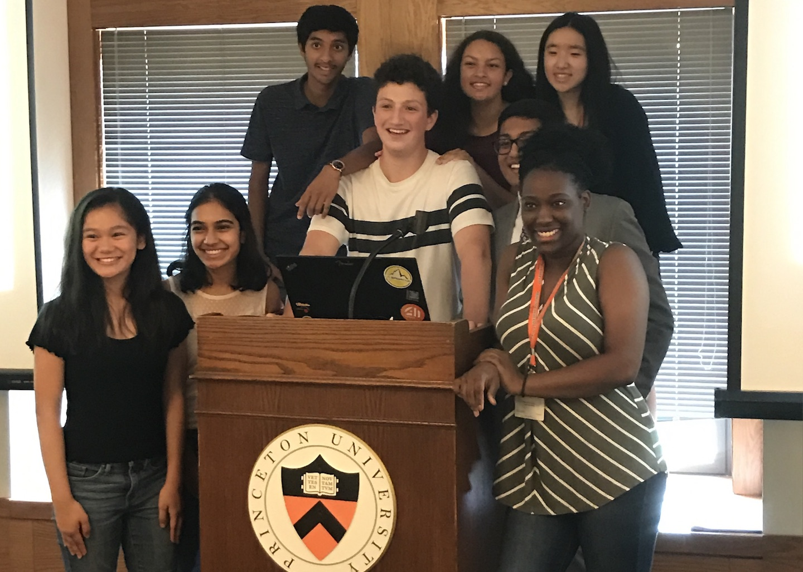
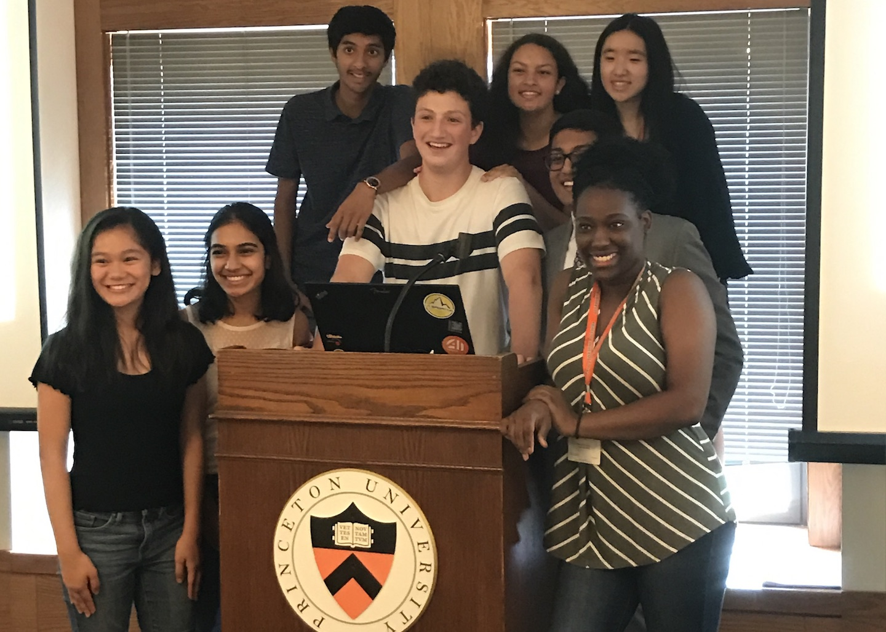
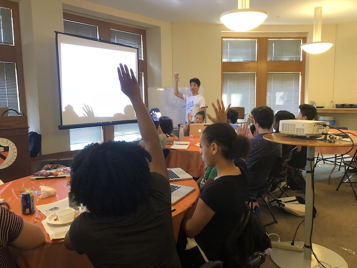
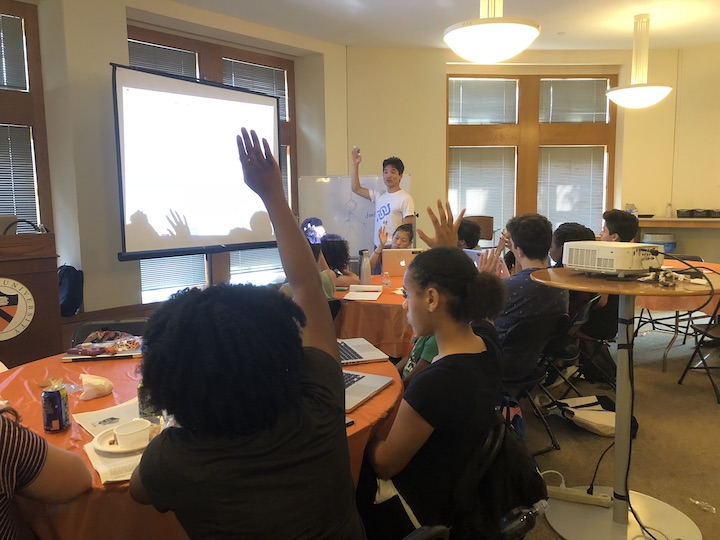

Overview
Artificial Intelligence (AI) is rapidly changing the world. AI has amazingly broad applications, and we need people with a comparably broad set of experiences and worldviews working on AI problems. However, there is a distinct lack of diversity of people in the AI community, leading to a lack of diversity of thought. This results in technology biased for certain demographics, needs and values, accruing the benefits of AI to the few instead of the all. The solution to the problem has to start with education. We are actively working to diversify the field of AI by educating a diverse pipeline of future AI leaders, starting in high school and earlier.

AI4ALL Nonprofit
The
AI4ALL nonprofit, which
Prof. Olga Russakovsky co-founded in 2017 together with
Prof. Fei-Fei Li and
Dr. Rick Sommer, is a nonprofit working to increase diversity and inclusion in AI by educating a diverse next generation of AI leaders. AI4ALL has partnered with
many universities to create summer camps for high schoolers from populations traditionally underrepresented in AI (women or gender non-binary, racial minorities, low income) so as to expand the AI talent pipeline. The camps' curriculum emphasizes learning AI in the context of societal problems that are personally meaningful to the students: for example, studying how AI can be used for safer driving or how AI-powered devices can be used to build energy-sustainable homes. Camp participants get to learn from AI experts guided by the learning principles developed at AI4ALL, and the curriculum is continuously evaluated and refined (e.g., see
our SIGCSE 2016 work). The camp alumni join the
Changemakers in AI community at AI4ALL and get access to mentorship, ongoing AI education, peer support, and leadership opportunities.
Princeton AI4ALL
Princeton AI4ALL is a three-week summer camp for rising high school juniors co-founded in 2018 by
Prof. Olga Russakovsky and
Prof. Ed Felten. The curriculum developed together with a team of undergraduate and graduate students in the
Computer Science Department and the
Center for Information Technology Policy emphasizes the intersection of AI technology and policy. The 32 camp participants are majority non-male (56% female in 2018, 65% female or non-binary in 2019), about half underrepresented racial minorities (47% identified as Black/African American and/or Hispanic/Latinx in 2018 and 2019), and predominantly low income (87% in 2018 and 63% in 2019 received need-based financial aid). The curriculum includes research lectures by Princeton AI professors, machine learning tutorials, hands-on AI-for-social-good projects, and a field trip to Washington, DC to meet with AI policy leaders. In addition to the impact on the participants, the camp also serves to bring together Princeton undergraduate and graduate student instructors who are looking to hone their teaching skills, to meaningfully contribute to solving the diversity crisis, and to find like-minded friends and mentors to sustain their own future AI pursuits.


 



 

 

 
